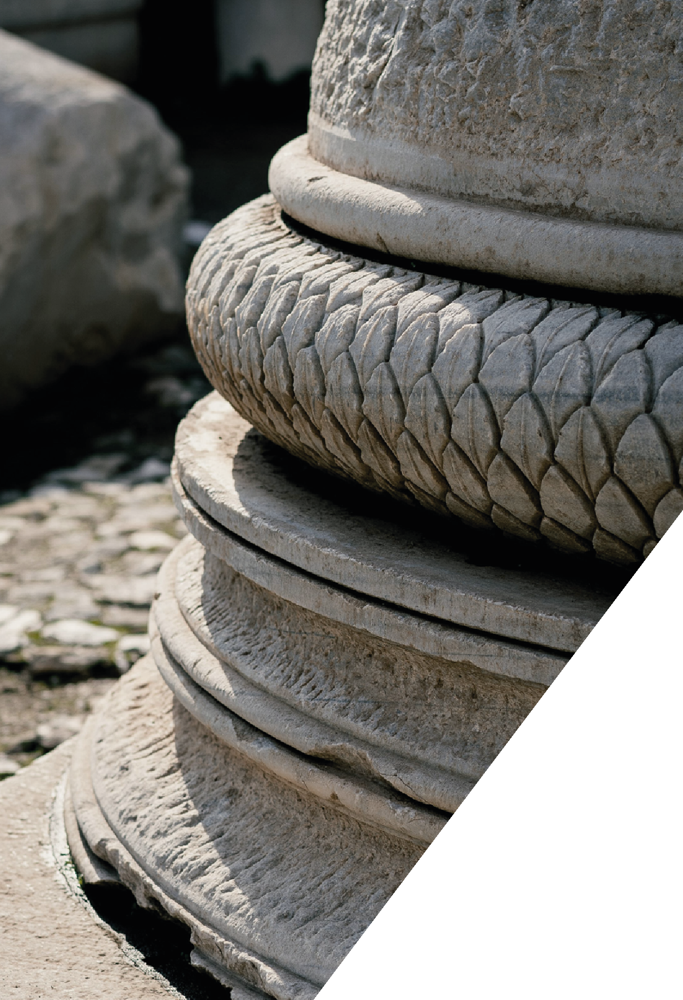

Áreas de PrácticaPractice Areas
Litigios Civiles y ComercialesCivil & Commercial Litigation
Acciones ConstitucionalesConstitutional Actions
Arbitrajes Nacionales e InternacionalesDomestic & International Arbitration
Litigios sobre SegurosInsurance Litigation
Libre Competencia y Competencia DeslealAntitrust & Unfair Competition
Acciones de Clase y Derecho del ConsumoClass Actions & Consumer Law
Procedimientos Contencioso AdministrativosAdministrative Litigation
Procesos de Insolvencia y ReestructuraciónInsolvency & Restructuring